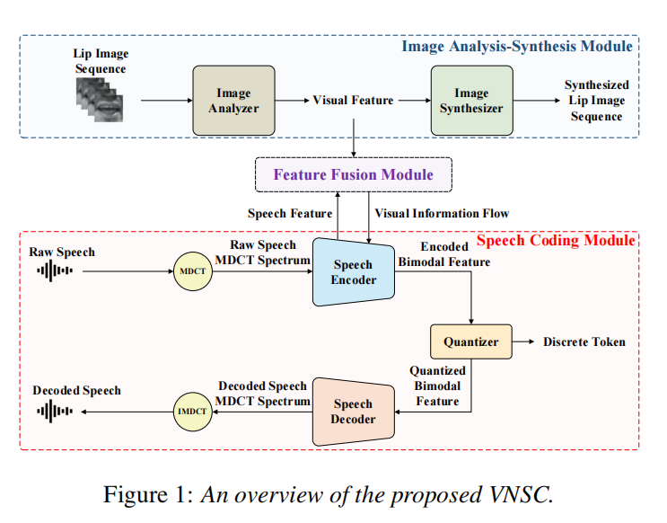

Vision-Integrated High-Quality Neural Speech Coding
Abstract
This paper proposes a novel vision-integrated neural speech codec (VNSC), which aims to enhance speech coding quality by leveraging visual modality information. In VNSC, the image analysis-synthesis module extracts visual features from lip images, and the feature fusion module facilitates interaction between image analysis-synthesis module and speech coding module, transmitting visual information to assist the speech coding process. Depending on whether visual information is available during the inference stage, the feature fusion module integrates visual features into the speech encoding module using either explicit integration or implicit distillation strategies. Experimental results confirm that the integration of visual information can effectively improve the decoded speech quality and enhance noise robustness of the neural speech codec, without increasing the bitrate.
Contents
Overview
